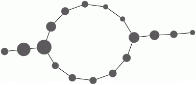
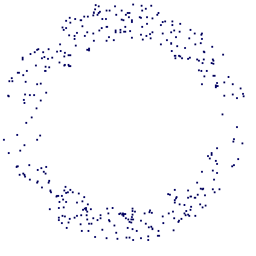
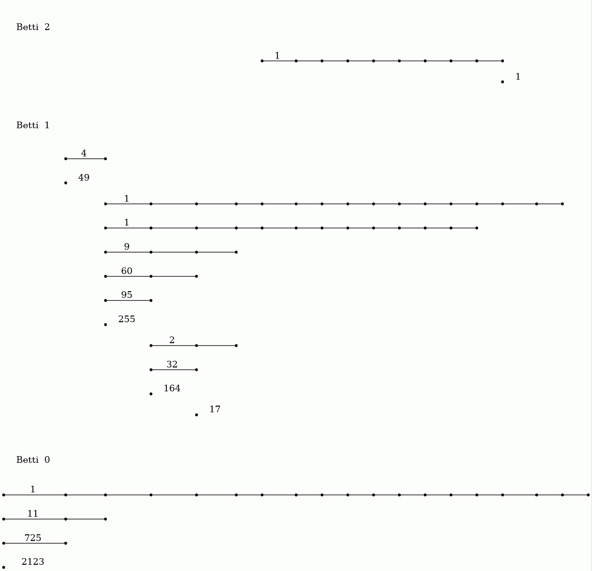
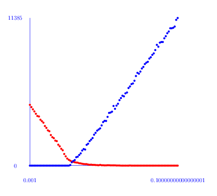

Pairwise distances between 74 points from some metric space have been recorded and stored in a 74× 74 matrix D. The following commands load the matrix, construct a filtration of length 100 on the first two dimensions of the assotiated clique complex (also known as the Rips Complex), and display the resulting degree 0 persistent homology as a barcode. A single bar with label n denotes n bars with common starting point and common end point.
gap> file:=HapFile("data253a.txt");; gap> Read(file); gap> G:=SymmetricMatrixToFilteredGraph(D,100); Filtered graph on 74 vertices. gap> K:=FilteredRegularCWComplex(CliqueComplex(G,2)); Filtered regular CW-complex of dimension 2 gap> P:=PersistentBettiNumbers(K,0);; gap> BarCodeCompactDisplay(P);
The next commands display the resulting degree 1 persistent homology as a barcode.
gap> P:=PersistentBettiNumbers(K,1);; gap> BarCodeCompactDisplay(P);

The following command displays the 1 skeleton of the simplicial complex arizing as the 65-th term in the filtration on the clique complex.
gap> Y:=FiltrationTerm(K,65); Regular CW-complex of dimension 1 gap> Display(HomotopyGraph(Y));

These computations suuggest that the dataset contains two persistent path components (or clusters), and that each path component is in some sense periodic. The final command displays one possible representation of the data as points on two circles.
Each point in the dataset was an image consisting of 732× 761 pixels. This point was regarded as a vector in R^732× 761 and the matrix D was constructed using the Euclidean metric. The images were the following:

The following example reads in a set S of vectors of rational numbers. It uses the Euclidean distance d(u,v) between vectors. It fixes some vector $u_0\in S$ and uses the associated function f: D→ [0,b] ⊂ R, v↦ d(u_0,v). In addition, it uses an open cover of the interval [0,b] consisting of 100 uniformly distributed overlapping open subintervals of radius r=29. It also uses a simple clustering algorithm implemented in the function cluster.
These ingredients are input into the Mapper clustering procedure to produce a simplicial complex M which is intended to be a representation of the data. The complex M is 1-dimensional and the final command uses GraphViz software to visualize the graph. The nodes of this simplicial complex are "buckets" containing data points. A data point may reside in several buckets. The number of points in the bucket determines the size of the node. Two nodes are connected by an edge when their end-point nodes contain common data points.
gap> file:=HapFile("data134.txt");; gap> Read(file); gap> dx:=EuclideanApproximatedMetric;; gap> dz:=EuclideanApproximatedMetric;; gap> L:=List(S,x->Maximum(List(S,y->dx(x,y))));; gap> n:=Position(L,Minimum(L));; gap> f:=function(x); return [dx(S[n],x)]; end;; gap> P:=30*[0..100];; P:=List(P, i->[i]);; gap> r:=29;; gap> epsilon:=75;; gap> cluster:=function(S) > local Y, P, C; > if Length(S)=0 then return S; fi; > Y:=VectorsToOneSkeleton(S,epsilon,dx); > P:=PiZero(Y); > C:=Classify([1..Length(S)],P[2]); > return List(C,x->S{x}); > end;; gap> M:=Mapper(S,dx,f,dz,P,r,cluster); Simplicial complex of dimension 1. gap> Display(GraphOfSimplicialComplex(M));

The datacloud S consists of the 400 points in the plane shown in the following picture.

The following example reads in a digital image as a filtered pure cubical complexex. The filtration is obtained by thresholding at a sequence of uniformly spaced values on the greyscale range. The persistent homology of this filtered complex is calculated in degrees 0 and 1 and displayed as two barcodes.
gap> file:=HapFile("image1.3.2.png");; gap> F:=ReadImageAsFilteredPureCubicalComplex(file,20); Filtered pure cubical complex of dimension 2. gap> P:=PersistentBettiNumbers(F,0);; gap> BarCodeCompactDisplay(P);

gap> P:=PersistentBettiNumbers(F,1);; gap> BarCodeCompactDisplay(P);

The 20 persistent bars in the degree 0 barcode suggest that the image has 20 objects. The degree 1 barcode suggests that 14 (or possibly 17) of these objects have holes in them.
Assuming that short bars and isolated points in the barcodes represent noise while long bars represent essential features, a "noiseless" representation of the image should correspond to a term in the filtration corresponding to a column in the barcode incident with all long bars but incident with no short bars or isolated points. The following commands confirm that the 4th term in the filtration is such a term and display this term as a binary image.
gap> Y:=FiltrationTerm(F,4); Pure cubical complex of dimension 2. gap> BettiNumber(Y,0); 20 gap> BettiNumber(Y,1); 14 gap> Display(Y);

The following image was used in the example.

In order to automatically count the number of coins in this picture

we can load the image as a filtered pure cubical complex F of filtration length 30 say, and observe the degree zero persistent Betti numbers to establish that the 21-st term or so of F seems to be 'noise free' in degree zero. We can then set M equal to the 21-st term of F and thicken M a couple of times say to remove any tiny holes it may have. We can then construct the complement C of M. Then we can construct a 'neighbourhood thickening' filtration T of C with say 50 consecutive thickenings. The degree one persistent barcode for T has 24 long bars, suggesting that the original picture consists of 24 coins.
gap> F:=ReadImageAsFilteredPureCubicalComplex("my_coins.png",30);; gap> M:=FiltrationTerm(F,21);; #Chosen after viewing degree 0 barcode for F gap> M:=PureComplexThickened(M);; gap> M:=PureComplexThickened(M);; gap> C:=PureComplexComplement(M);; gap> T:=ThickeningFiltration(C,50);; gap> P:=PersistentBettiNumbers(T,1);; gap> BarCodeCompactDisplay(P);

The pure cubical complex M has the correct number of path components, namely 25, but its path components are very much subsets of the regions in the image corresponding to coins. The complex M can be thickened repeatedly, subject to no two path components being allowed to merge, in order to obtain a more realistic image segmentation with path components corresponding more closely to coins. This is done in the follow commands which use a makeshift function Basins(L) available here. The commands essentially implement the standard watershed segmentation algorithm but do so by using the language of filtered pure cubical complexes.
gap> W:=PureComplexComplement(FiltrationTerm(T,25));; gap> L:=[];; gap> for i in [1..PathComponentOfPureComplex(W,0)] do gap> P:=PathComponentOfPureComplex(W,i);; gap> Q:=ThickeningFiltration(P,50,M);; gap> Add(L,Q);; gap> od;; gap> B:=Basins(L); gap> Display(B);

From any sequence X_0 ⊂ X_1 ⊂ X_2 ⊂ ⋯ ⊂ X_T of cellular spaces (such as pure cubical complexes, or cubical complexes, or simplicial complexes, or regular CW complexes) we can construct a filtered chain complex C_∗ X_0 ⊂ C_∗ X_1 ⊂ C_∗ X_2 ⊂ ⋯ C_∗ X_T. The induced homology homomorphisms H_n(C_∗ X_0, F) → H_n(C_∗ X_1, F) → H_n(C_∗ X_2, F) → ⋯ → H_n(C_∗ X_T, F) with coefficients in a field F can be computed by applying an appropriate sequence of elementary row operations to the boundary matrices in the chain complex C_∗ X_T⊗ F; the boundary matrices are sparse and are best represented as such; the row operations need to be applied in a fashion that respects the filtration. This method is used in the above examples of persistent homology. The method is not practical when the number of cells in X_T is large.
An alternative approach is to construct an admissible discrete vector field on each term X_k in the filtration. For each vector field there is a non-regular CW-complex Y_k whose cells correspond to the critical cells in X_k and for which there is a homotopy equivalence X_k≃ Y_k. For each k the composite homomorphism H_n(C_∗ Y_k, F) stackrel≅→ H_n(C_∗ X_k, F) → H_n(C_∗ X_k+1, F) stackrel≅→ H_n(C_∗ Y_k+1, F) can be computed and the persistent homology can be derived from these homology homomorphisms. This method is implemented in the function PersistentBettiNUmbersAlt(X,n,p) where p is the characteristic of the field, n is the homology degree, and X can be a filtered pure cubical complex, or a filtered simplicial complex, or a filtered regular CW complex, or indeed a filtered chain complex (represented in sparse form). This function incorporates the functions ContractedFilteredPureCubicalComplex(X) and ContractedFilteredRegularComplex(X) which respectively input a filtered pure cubical complex and filtered regular CW-complex and return a filtered complex of the same data type in which each term of the output filtration is a deformation retract of the corresponding term in the input filtration.
In this approach the vector fields on the various spaces X_k are completely independent and so the method lends itself to a degree of easy parallelism. This is not incorporated into the current implementation.
As an illustration we consider a synthetic data set S consisting of 3527 points sampled, with errors, from an `unknown' manifold M in R^3. From such a data set one can associate a 3-dimensional cubical complex X_0 consisting of one unit cube centred on each (suitably scaled) data point. Given a pure cubical complex X_s we construct X_s+1 =X_s ∪ {overline e^3_λ}_λ∈ Λ by adding to X_s each closed unit cube overline e^3_λ in R^3 that intersects non-trivially with X_s. We construct the filtered cubical complex X_∗ ={X_i}_0≤ i≤ 19 and compute the persistence matrices β_d^∗∗ for d=0,1,2 and for Z_2 coefficients. The filtered complex X_∗ is quite large. In particular, the final space X_19 in the filtration involves 1092727 vertices, 3246354 edges, 3214836 faces of dimension 2 and 1061208 faces of dimension 3. The usual matrix reduction approach to computing persistent Betti numbers would involve an appropriate row reduction of sparse matrices one of which has over 3 million rows and 3 million columns.
gap> file:=HapFile("data247.txt");; gap> Read(file);; gap> F:=ThickeningFiltration(T,20);; gap> P2:=PersistentBettiNumbersAlt(F,2);; gap> BarCodeCompactDisplay(P2); gap> P1:=PersistentBettiNumbersAlt(F,1);; gap> BarCodeCompactDisplay(P1); gap> P0:=PersistentBettiNumbersAlt(F,0);; gap> BarCodeCompactDisplay(P0);

The barcodes suggest that the data points might have been sampled from a manifold with the homotopy type of a torus.
Of course, a wedge S^2∨ S^1∨ S^1 has the same homology as the torus S^1× S^1. By establishing that a 'noise free' model for our data points, say the 10-th term X_10 in the filtration, has a non-trivial cup product ∪: H^1(X_10, Z) × H^1(X_10, Z) → H^2(X_10, Z) we can eliminate S^2∨ S^1∨ S^1 as a candidate from which the data was sampled.
gap> X10:=RegularCWComplex(FiltrationTerm(F,10));; gap> cup:=LowDimensionalCupProduct(X10);; gap> cup([1,0],[0,1]); [ 1 ]
For a positive integer n and probability p we denote by Y(n,p) the Linial-Meshulam random simplicial 2-complex. Its 1-skeleton is the complete graph on n vertices; each possible 2-simplex is included independently with probability p.
The following commands first compute the number h_i of non-trivial cyclic summands in H_i(Y(100,p), Z) for a range of probabilities p and i=1,2 and then produce a plot of h_i versus p. The plot for h_1 is red and the plot for h_2 is blue. A plot for the Euler characteristic 1-h_1+h_2 is shown in green.
gap> L:=[];;M:=[];; gap> for p in [1..100] do > K:=RegularCWComplex(RandomSimplicialTwoComplex(100,p/1000));; > h1:=Length(Homology(K,1));; > h2:=Length(Homology(K,2));; > Add(L, [1.0*(p/1000),h1,"red"]); > Add(L, [1.0*(p/1000),h2,"blue"]); > Add(M, [1.0*(p/1000),1-h1+h2,"green"]); > od; gap> ScatterPlot(L); gap> ScatterPlot(M);
 
From this plot it seems that there is a phase change threshold at around p=0.025. An inspection of the first homology groups H_1(Y(100,p), Z) shows that in most cases there is no torsion. However, around the threshold some of the complexes do have torsion in their first homology.
Similar commands for Y(75,p) suggest a phase transition at around p=0.035 in this case. The following commands compute H_1(Y(75,p), Z) for 900 random 2-complexes with p in a small interval around 0.035 and, in each case where there is torsion, the torsion coefficients are stored in a list. The final command prints these lists -- all but one of which are of length 1. For example, there is one 2-dimensional simplicial complex on 75 vertices whose first homology contains the summand Z_107879661870516800665161182578823128. The largest prime factor is 80555235907994145009690263 occuring in the summand Z_259837760616287294231081766978855.
gap> torsion:=function(n,p) > local H, Y; > Y:=RegularCWComplex(RandomSimplicialTwoComplex(n,p)); > H:=Homology(Y,1); > H:=Filtered(H,x->not x=0); > return H; > end; function( n, p ) ... end gap> L:=[];;for n in [73000..73900] do > t:=torsion(75,n/2000000); > if not t=[] then Add(L,t); fi; > od; gap> Display(L); [ [ 2 ], [ 26 ], [ 259837760616287294231081766978855 ], [ 2 ], [ 3 ], [ 2 ], [ 2761642698060127444812143568 ], [ 2626355281010974663776273381976 ], [ 2 ], [ 3 ], [ 33112382751264894819430785350 ], [ 16 ], [ 4 ], [ 3 ], [ 2 ], [ 3 ], [ 2 ], [ 85234949999183888967763100590977 ], [ 2 ], [ 24644196130785821107897718662022 ], [ 2, 2 ], [ 2 ], [ 416641662889025645492982468 ], [ 41582773001875039168786970816 ], [ 2 ], [ 75889883165411088431747730 ], [ 33523474091636554792305315165 ], [ 107879661870516800665161182578823128 ], [ 5588265814409119568341729980 ], [ 2 ], [ 5001457249224115878015053458 ], [ 10 ], [ 12 ], [ 2 ], [ 2 ], [ 3 ], [ 7757870243425246987971789322 ], [ 8164648856993269673396613497412 ], [ 2 ] ]
generated by GAPDoc2HTML